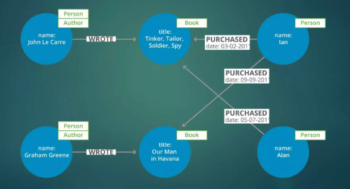

Funcionamiento
Bases de datos documentales
El funcionamiento de las bases de datos documentales es
- Almacenamiento:
- Organización:
- Consultas:
Almacenan datos en documentos JSON, BSON o XML, que son estructuras semiestructuradas que pueden contener diferentes tipos de datos.
Los documentos se almacenan en colecciones, que son como carpetas que agrupan documentos relacionados. No existe una estructura rígida como en las bases de datos relacionales.
Se utilizan consultas NoSQL como JSONPath o MQL para buscar y recuperar documentos específicos de una colección.
Imagina una colección de documentos JSON que representan perfiles de usuario. Cada documento contiene información como nombre, edad, dirección y preferencias. Las consultas NoSQL te permiten buscar usuarios por nombre, ciudad o intereses específicos.

Bases de datos clave-valor
El funcionamiento de las bases de datos clave-valor es:
- Almacenamiento:
- Organización:
- Consultas:
Almacenan datos como pares de clave-valor, donde la clave es un identificador único y el valor puede ser cualquier tipo de dato.
Los pares de clave-valor se almacenan en un gran almacén de datos, sin una estructura definida.
Se utilizan claves únicas para recuperar valores específicos. Las consultas de rango o de búsqueda de varios valores también son posibles
Imagina un almacén que guarda pares de clave-valor como "usuario1: 1234" o "productoX: información del producto". La clave te permite recuperar el valor asociado instantáneamente, como si buscaras un libro en una biblioteca por su número de ISBN.

Bases de datos Orientadas a columnas
El funcionamiento de las bases de datos orientadas a columnas es:
- Almacenamiento:
- Organización:
- Consultas:
Almacenan datos en columnas en lugar de filas, como en las bases de datos relacionales. Cada columna representa un atributo específico, y las filas son registros individuales.
Las columnas se comprimen y se optimizan para un acceso rápido. Los datos se pueden particionar y distribuir en varios servidores.
Las consultas se optimizan para recuperar columnas específicas, lo que mejora el rendimiento para análisis de datos.
Imagina una tabla con columnas como "nombre", "edad" y "ciudad". Las consultas pueden recuperar solo la columna "ciudad" para todos los usuarios, en lugar de toda la fila, lo que permite un análisis eficiente de grandes conjuntos de datos.

Bases de datos de grafos
El funcionamiento de las bases de datos de grafos es:
- Almacenamiento:
- Organización:
- Consultas:
Representan los datos como una red de nodos y aristas. Los nodos almacenan entidades (como personas, lugares o productos) y las aristas representan las relaciones entre ellas.
Los nodos y las aristas se almacenan en un grafo, que puede ser muy complejo y representar relaciones dinámicas.
Las consultas NoSQL específicas para grafos (como Cypher o Gremlin) se utilizan para navegar por el grafo, encontrar relaciones y analizar patrones.
Imagina una red social donde los nodos son usuarios y las aristas representan las conexiones de amistad. Las consultas de grafos te permiten encontrar amigos de amigos, identificar grupos de personas con intereses comunes o analizar la influencia de ciertos usuarios en la red.
